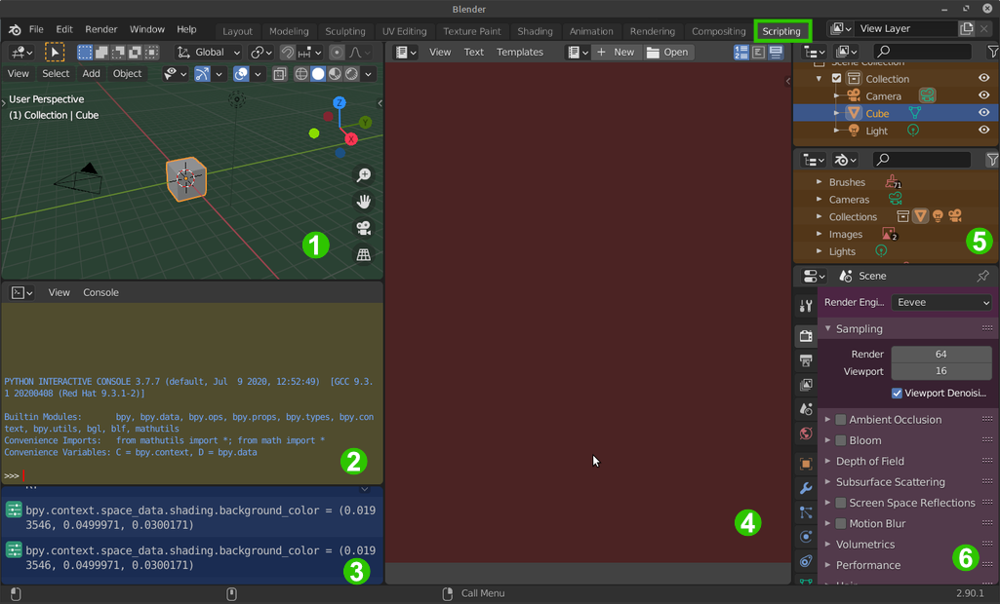
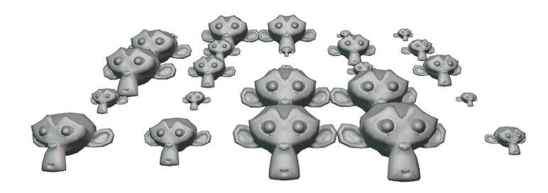
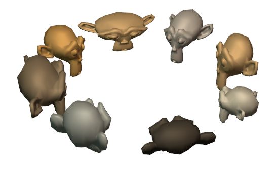
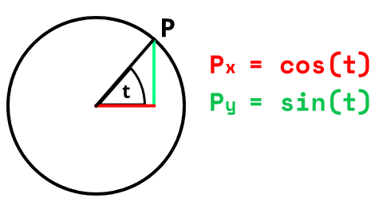

Übung 1 - Blender Setup & Scripting-Tools
In dieser Übung wollen wir uns mit dem Setup von Blender für Scripting, sowie den Tools, die uns von Blender selbst dafür zur Verfügung gestellt werden beschäftigen.
Einführung
Wie viele andere Softwarepakete im Bereich der Medienproduktion lässt sich Blender mit der Programmiersprache Python automatisieren. Blender wird dazu mit einer eigenen Python-Distribution ausgeliefert und installiert (diese liegt im Blender-Installationsverzeichnis in einem eigenen python Unterverzeichnis). Obwohl Blender selbst in den Programmiersprachen C und C++ geschrieben wurde, ist der gesamte Source-Code eng mit Python verzahnt. Nahezu jede Funktionalität, die sich in Blender über das User Interface auslösen lässt, kann auch mit Python-Befehlen aus einem Skript aufgerufen werden. Darüber hinaus sind sämtliche Daten innerhalb von Blender über Python-Strukturen zugreifbar. Dazu zählen u.a.
- Szenen und Objekte
- Geometrie
- Kamera und Beleuchtung
- Materialien
- Texturen
Erste Schritte
Ladet euch zunächst von Blender.org die aktuelle Version von Blender herunter.Dieses Script behandelt die Version 2.91. Zukünftige Versionen könnten eventuell Änderungen an der API vornehmen, normalerweise bleibt die API bei Updates jedoch großteils unverändert.
- Eine Einführung in Blender selbst, sowie Links mit Tutorials etc. gibt es im Script zur Veranstalltung Computergrafik
- Öffnet Blender und in Blender die Preferences
- Aktiviert hier nun im Interface Tab Python Tooltips und Development Extras

RMB → Edit Source). Der Sourcecode wird dann im Texteditor geöffnet. Da manche Bereiche der UI automatisch über den C-Kern von Blender generiert werden, gibt es jedoch nicht zu jedem Wert und Knopf ein Pythonscript.

Scripting Tools
Wechselt nun zum Workspace-Tab Scripting
- Der 3D View 1 stellt die aktuelle Szene in 3D dar.
- Mit der Python Konsole 2 kann wie mit dem
python-Befehl von der Kommandozeile des Betriebssystems interaktiv Python-Code Zeile für Zeile eingegeben werden. - Das Info Fenster 3 gibt den Code von in Blender ausgeführten Aktionen aus
- Im Text Editor 4 wird der Code für unsere Scripte geschrieben
- Die beiden Outliner Fenster 5 zeigen oben die aktuelle Szenen-Hierarchie und unten alle Daten des geöffneten Blender Files
- Der Properties Editor 6 ermöglicht die Bearbeitung von Werten des aktuellen Objekts, sowie Einstellungen der Szene.
Ein weiteres wichtiges Werkzeug ist die Systemkonsole.
- Wenn Windows benutzt wird, wählt Window → Toggle System Console
- In Linux und Mac(? - TODO) muss Blender über das Terminal gestartet werden und dieses Terminal erfüllt dann deren Zweck.

Nach dem Start von Blender zeigt uns die Systemkonsole die mitgelieferte Python-Installation an. Hier werden auch Fehlermeldungen und Ausgaben des print() Befehls ausgegeben.
Live Scripting
Die Python Konsole ermöglicht Live Scripting. Auch Auto Vervollständigung ist möglich. So kann beispielsweise bpy. (blender python API) getippt werden und anschließend mit TAB die verfügbaren nachfolgenden Pfade angezeigt werden. Mit Pfeil nach oben kann der letzte Befehl wieder aufgerufen werden.
Mit folgendem Befehl können wir z.b. das selektierten Objekts um zwei Einheiten entlang der Y-Achse verschieben.
bpy.ops.transform.translate(value=(0, 2, 0))
Pfade können auch in Variablen gespeichert und dann über diese manipulert werden:
my_cube = bpy.context.object
my_cube.location.x += 2
wird lediglich der Pfad zu einer Variablen oa. eingegeben, gibt die Konsole deren Wert zurück. Z.b. my_cube.scale gibt Vector((1.0, 1.0, 1.0)) zurück. Wir wissen also nun, dass es sich bei scale um eine Datenstruktur “Vector” handelt und diese die Werte (1,1,1) für x, y und z hat.
Die Struktur der API wird im folgenden Kapitel noch genauer behandelt.
Was fällt uns hier ins Auge?:
Alles, was Blender für das Skripten zur Verfügung stellt, ist über das Python-Modul
bpyabrufbar. Unterhalb vonbpygibt es eine weitere hierarchische Aufteilung, so dass Blender-Kommandos in Python folgende Struktur haben:bpy.abc.def.[...].command()Das Kommando
bpy.ops.transform.translate()verwendet aus der Gesamtheit aller Blender-Python-Funktionalitätbpydie Untergruppe der Operatorenops, dort wird dann aus der Untergruppe der Transformations-Operatorentransformdie Methodetranslateaufgerufen.Funktionen (Methoden), die Parameter entgegen nehmen, verwenden meist named Paramter. Im Beispiel oben muss daher der Verschiebungsvektor, der an die Methode
translateübergeben wird, mitvalue=...explizit benannt werden. Bislang haben wir bei Python-Methoden die aus anderen Programmiersprachen bekannten positional Parameter kennen gelernt, bei denen die Position in der Parameterliste eindeutig bestimmt, welcher Parameter gemeint ist.Vektoren werden in einer 3D-Anwendung an allen möglichen Stellen verwendet. So auch in Blender, z.B. für die Angaben von Verschiebungen, Positionen, Normalen, Euler-Winkel, Textur-Koordinaten usw.. Diese können in Blender Python als Tupel (Siehe Lektion 2 - Datentypen) angegeben werden.
Abläufe als Script speichern
Das Info Fenster gibt uns für die meisten Aktionen, die wir in Blender tun den Python-Code aus, der im Hintergrund ausgeführt wird. So können wir schnell Arbeitsabläufe einfach aus dem Info Fenster herauskopieren und als Script abspeichern, um uns repetetive Arbeit zu sparen.
 Das Info Fenster nachdem ein Affenkopf hinzugefügt, diesem ein Subdivisio Surface Modifier hinzugefügt und er auf der Z-Achse um 2.0 skaliert wurde
Das Info Fenster nachdem ein Affenkopf hinzugefügt, diesem ein Subdivisio Surface Modifier hinzugefügt und er auf der Z-Achse um 2.0 skaliert wurde
Der Inhalt des Info-Fensters kann mit
LMB + Dragselektiert werden und mitSTRG + C&STRG + Vin das Textfenster kopiert werden (vorher dort oben auf New klicken).Damit unser Script funktioniert muss hier noch das bpy Modul importiert werden (in der Echtzeit-Konsole geschieht dies automatisch).
Das Script kann mit Klick auf den Play-Button oben im Texteditor oder mit dem Shortcut
ALT + P(mit Mauscursor im Texteditor) ausgeführt werden.

Die meisten Optionen der Operatoren haben Standardwerte und können weggelassen werden, wenn sie nicht benötigt werden. Es reicht daher für diesen Zweck auf folgender Code:
import bpy
bpy.ops.mesh.primitive_monkey_add()
bpy.ops.object.modifier_add(type='SUBSURF')
bpy.ops.transform.resize(value=(1, 1, 2)) #(1, 1, 2) steht hierbei für 1 auf X- und Y-Achse und 2 auf der Z-Achse
in Python können Funktionsparameter (hier z.b. der value Vektor der resize Funktion) entweder in deren Reihenfolge ohne Bezeichner, oder mit Bezeichner in beliebiger Reihenfolge aufgerufen werden. Letzeres ist zu bevorzugen wenn die Parameter nicht offensichtlich sind, um den Code gut lesbar zu halten.
Affentheater
Wir wollen nun das erlernte anwenden, um eine Horde von Affenköpfen (im Rechteck angeordnet) zu erstellen.

- Erstellt im Text Editor ein neues Script
- importiert zunächst die Blender API mit
import bpy- Um ein Gitter zu erzeugen benötigen wir zwei verschachtelte Schleifen (Zeilen und Spalten). Solche For-Schleifen in Python sind sehr einfach mit der range funktion möglich. Wird in dieser nur eine Zahl angegeben, entspricht diese der Anzahl an ausgeführten Iterationen.
for row in range(5): for column in range(5): #...Code um Affengitter mit 5 Reihen und Spalten zu erzeugen
Fügt nun den Code der Operatoren, den ihr aus dem Info Fenster kopieren könnt, in die geschachtelte Schleife ein. Wir wollen mit jeder Iteration:
- Einen Affen (Suzanne) an seinem Platz im Gitter hinzufügen
- Den Affen rotieren, damit er hübscher guckt
- Das Shading des Meshes auf Smooth setzen
Entfernt nun die nicht benötigten Parameter aus den Operatorfunktionen
Das Affengitter-Script sollte nun in etwa so aussehen:
import bpy
for row in range(5):
for column in range(5):
bpy.ops.mesh.primitive_monkey_add(location=(3 * row ,3 * column, 0))
bpy.ops.transform.rotate(value=0.6, orient_axis='X', orient_type='GLOBAL')
bpy.ops.object.shade_smooth()
Schließlich wollen wir die Verwendung von Magic Numbers (undokumentierte Zahlen irgendwo im Code) reduzieren.
- Dazu legen wir oben im Script die entsprechenden “Konstanten” an (speziell deklarierte Konstanten gibt es in Python nicht) und setzen sie unten im Code ein.
- Hier importieren wir noch das random modul und verwenden deren uniform Funktion, um jedem Affen eine zufällige Größe zu geben. Diese gibt einen zufälligen Wert innerhalb der Beiden übergebenen Parameter zurück.
import bpy import random GRID_SPACING = 3 GRID_SIZE = 5 SIZE_MIN = 0.2 SIZE_MAX = 1.2 for row in range(GRID_SIZE): for column in range(GRID_SIZE): bpy.ops.mesh.primitive_monkey_add(location=(GRID_SPACING * row ,GRID_SPACING * column, 0)) bpy.ops.transform.rotate(value=0.6, orient_axis='X', orient_type='GLOBAL') bpy.ops.object.shade_smooth() # random size size = random.uniform(SIZE_MIN, SIZE_MAX) bpy.ops.transform.resize(value=(size, size, size))Der fertige Affentheater Code
Aufgabe bis zum nächsten Mal
- Schreibt ein Script, welches eine Horde (5 oder mehr) von Affen in der Szene platziert und im Kreis anordnet
- Freiwilliger Zusatz: Lasst die Affenköpfe alle in die Mitte der Szene gucken.

- Experimentiert auch gerne mit weiteren Funkionen
Tipps
- Die Formel für die Position eines Punktes im Einheitskreis ist Folgende:
- t ist dabei der Winkel in Radianten. 360° entspricht 2Pi.
- Zur Nutzung von Sinus & Cosinus muss das math Modul importiert werden
import math
Ressourcen & Tutorials zum Thema
| Art/Länge | Titel | Beschreibung | Quelle |
|---|---|---|---|
| Python Crashcourse for Blender | Guter Schnelleinstieg in Scripting mit Blender | YouTube - Curtis Holt | |
| Blender Python API Dokumentation | Offizielle Blender API Dokumentation | Blender Python API Dokumentation | |
| Blender Python - Scripting Series | Ausführlichere Serie zu Blender Scripting | YouTube - Darkfall | |
| Scripting for Artists | Sehr gute aufgearbeitete Serie zu Blender Scripting und Addon Entwicklung - teilweise jedoch kostenpflichtig | Blender Cloud - Dr. Sybren A. Stüvel | |
| Einführung ins Programmieren mit Python | Auf Deutsch | pythonbuch.com | |
| The Python 3.7 Tutorial | Einstieg in Python | Offizielle Python 3.7 Documentation | |
| Python Tutorial 2020 | Einführung in alle wichtigen Python Funktionalitäten (Blender unabhängig) | YouTube - Derek Banas |